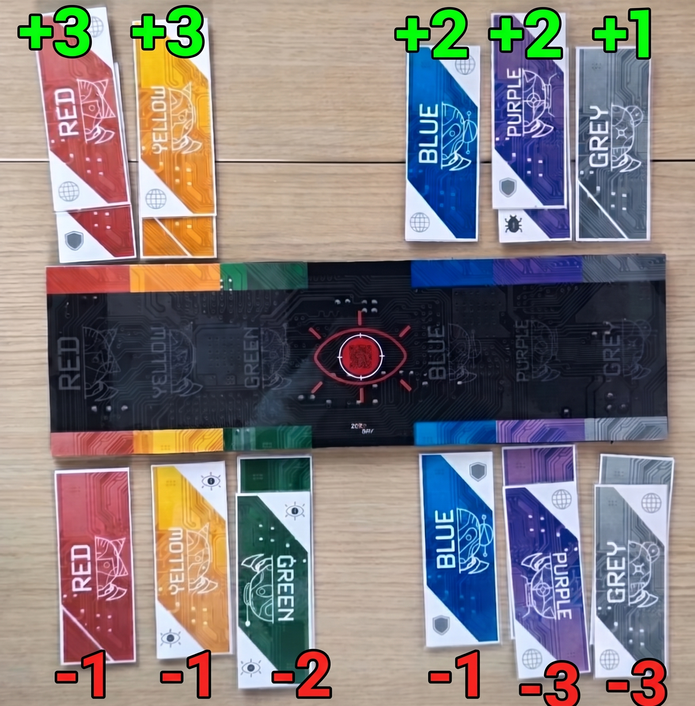
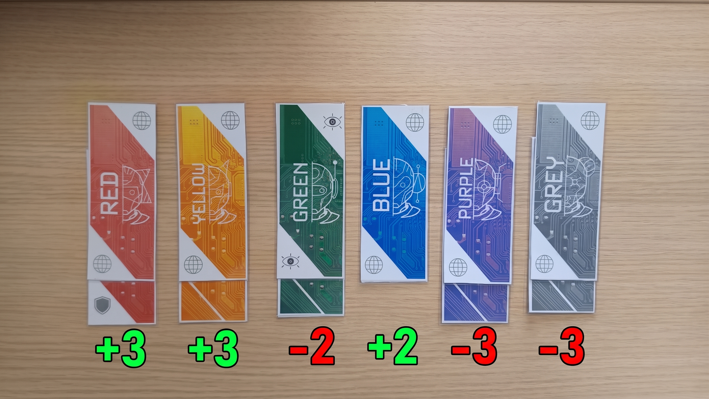

In Zero Day, the players are users on an Internet server. They have a common public
session (the central board), and one private session each. The goal: having your private
session be the most secure on the server. But be careful : your score will also depend
on the quality of the other sessions of the server, which you
will be able to influence, as well as your knowledge in cybersecurity !
Contents
1 gameboard
90 Robot cards (6 families of 15 cards each, represented by 6 different colors)
20 Mission cards
Setup
Remove 0 Robot cards from the deck.
It should contain
90 cards.
Place the board in the middle of the players
Each player draws 3 Robot cards and 2 Mission cards, which they may look at.
The Mission cards are only drawn now and cannot be changed.
Scan the QR code in the middle of the board. Take 2 quizzes, one for each Mission card.
If you answer right, keep the Mission card.
If you're wrong, discard it. (You cannot draw a new Mission)
Course of a turn
On your turn, you play your 3 cards (in any order):
One in the public session
One in your session
One in an opponent's session
See the list of cards to know the effects of each one.
After playing all 3 cards, draw 3 more.
If the deck is empty, wait for everyone to have played all their cards to end the game.
During a turn, you may scan the QR code to answer a quiz.
See the next section for more details.
Quiz validation & bonus points
At the start of the game, each player answers 2 easy quizzes, one per Mission card:
a right answer keeps the card, a wrong one discards it.
Then, each round, use the app to submit random players to a quiz: 1 player per round with 2-3 players,
2 players per round with 4-5 players.
Once per round, each player also has the option to ask for a hard quiz.
A right answer validates your action and gives +0.5 point.
A wrong answer cancels it and gives -0.5 point.
Your bonus points stay between -5 and +5, shown on the gauge next to your name.
Special cards
Mission cards :
Mission cards provide goals that will grant bonus points if completed at the end of the game.
They are drawn only at the start of the game and revealed only at the end of the game.
Robot cards :
In each family, certain cards have roles that will be valuable to you to change the course of the game.
Their roles are indicated by the icon in the corners of the card :
VPN (x4 per family)
It counts for 2 cards in all sessions.
Hacker (x2 per family)
It is played face down (in the public session, it is placed in the center row of the board, but still above or below).
Its family is revealed only at the end of the game.

Virus (x2 per family)
When a player places it in a session,
they have the option to remove a card present in that same session,
regardless of the card's family.
The eliminated card is permanently removed from the game.
The virus
can remove a hacker,
in which case the hacker's family is not revealed.
(If multiple cards from the same family are in the same session,
the virus can only remove the most recent one).
The ability of the virus is optional.

Antivirus (x3 per family)
It is immune to viruses
and therefore can never be removed
by the Virus card.
The other cards with no icon have no additional effect.
Scoring
For each family, determine its level of protection :

If there are more cards above the family,
it's protected
and gives
positive points.
If there are more cards below the family,
it's corrupted
and gives
negative points.
If there is no majority,
the family is vulnerable
and will not give any points.
Then, count the number of cards from each family in your session
(remember a VPN counts as 2 cards) :

Each card from a
protected
family gives
+1 point.
Each card from a
corrupted
family gives
-1 point.
Cards from a
vulnerable
family give
0 point.
With the example above, at the end of the game, you have a total of 0 points.
You earn 8 points
for the cards from the blue, red, and yellow families.
You lose 8 points
because of the cards from the purple and gray families.
Then reveal your Mission cards to the other players.
If you completed a mission, add 3 points to your score.
Finally, add your bonus points from the quizzes on the app.